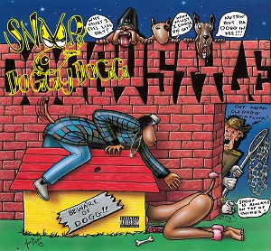

Its highly unlikely you havent heard of snoop dogg or heard his song Still dre featuring snoop dogg.West Coast rap legend Snoop Dogg has come a long way since being discovered by Dr. Dre in the early 1990s. As impressive as he was when guesting on Dre’s The Chronic in 1992, few could have guessed he’d go on to global fame, tens of millions of record sales and a career in movies and TV.
Calvin Cordozar Broadus Jr. (born October 20, 1971), known professionally as Snoop Dogg, is an American rapper, singer, songwriter, producer, media personality, entrepreneur, and actor. His music career began in 1992 when he was discovered by Dr. Dre and featured on Dre's solo debut, "Deep Cover", and then on Dre's solo debut album, The Chronic. He has since sold over 23 million albums in the United States and 35 million albums worldwide.

Musical Career
Snoop's debut album, Doggystyle, produced by Dr. Dre, was released in 1993 by Death Row Records. Bolstered by excitement driven by Snoop's featuring on
The Chronic, the album debuted at number one on both the Billboard 200 and Billboard Top R&B/Hip-Hop Albums charts. Selling almost a million copies in the
first week of its release, Doggystyle became certified quadruple platinum in 1994 and spawned several hit singles, including "What's My Name?" and
"Gin & Juice". In 1994 Snoop released a soundtrack on Death Row Records for the short film Murder Was the Case, starring himself. His second album,
Tha Doggfather (1996), also debuted at number one on both charts, with "Snoop's Upside Ya Head" as the lead single. The album was certified double
platinum in 1997.

After leaving Death Row Records, Snoop signed with No Limit Records, where he recorded his next three albums, Da Game Is to Be Sold, Not to Be Told (1998),
No Limit Top Dogg (1999), and Tha Last Meal (2000). Snoop then signed with Priority/Capitol/EMI Records in 2002, where he released Paid tha Cost to Be da
Boss. He then signed with Geffen Records in 2004 for his next three albums, R&G (Rhythm & Gangsta): The Masterpiece, Tha Blue Carpet Treatment, and Ego
Trippin'. Malice 'n Wonderland (2009), and Doggumentary (2011) were released on Priority. Snoop Dogg has starred in motion pictures and hosted several
television shows, including Doggy Fizzle Televizzle, Snoop Dogg's Father Hood, and Dogg After Dark. He also coaches a youth football league and high school
football team. In September 2009 Snoop was hired by EMI as the chairman of a reactivated Priority Records.
In 2012, after a trip to Jamaica, Snoop converted to the Rastafari movement, switched the focus of his music to reggae and
changed his name to Snoop Lion. He said "I have always said I was Bob Marley reincarnated". As Snoop Lion he released a reggae album,
Reincarnated, and a documentary film of the same name, about his Jamaican experience, in early 2013. His 13th studio album, Bush, was released in May
2015 and marked a return of the Snoop Dogg name. His 14th solo studio album, Coolaid, was released in July 2016. Snoop has 17 Grammy nominations without
a win. In March 2016, the night before WrestleMania 32 in Arlington, Texas, he was inducted into the celebrity wing of the WWE Hall of Fame, having made
several appearances for the company, including as Master of Ceremonies during a match at WrestleMania XXIV. In 2018, Snoop announced that he was
"a born-again Christian" and released his first gospel album, Bible of Love. On November 19, 2018, Snoop Dogg was given a star on the Hollywood Walk
of Fame. He released his seventeenth solo album, I Wanna Thank Me in 2019.
The Icon
Since the start of his career, Snoop has been an avowed cannabis smoker, making it one of the trademarks of his image. In 2002, he announced he was giving up cannabis for good; that did not last long (a situation famously referenced in the 2004 Adam Sandler movie 50 First Dates) and in 2013, he claimed to be smoking approximately 80 cannabis blunts a day. He has been certified for medical cannabis in California to treat migraines since at least 2007.
Snoop claimed in a 2006 interview with Rolling Stone magazine that unlike other hip hop artists who had superficially adopted the pimp persona, he was an actual professional pimp in 2003 and 2004, saying, "That shit was my natural calling and once I got involved with it, it became fun. It was like shootin' layups for me. I was makin' 'em every time." He went on to say that on the advice of some of the pimps he knew, he eventually gave up pimping to spend more time with his family.
World Records
At the BottleRock Napa Valley music festival May 26, 2018, Snoop Dogg, Warren G, Kendall Coleman, Kim Kaechele and Michael Voltaggio set the Guinness World Record for the largest paradise cocktail. Measuring 550 litres, the "Gin and Juice" drink was mixed from 180 1.75 litres bottles of gin, 156 1 litre bottles of apricot brandy and 28 3.78 litres jugs of orange juice.
Present Day
Currently Snoop Dogg is doing exactly what you think he would be doing. You can catch him on the Double G News Network or on his instagram which he uses actively. Catch his latest album on spotify.